◆宣傳活動舉辦期間◆
2019年8月3日(六) 8:00～8月14日(三) 11:59
◆有關從者真名的注意◆
在2018年12月31日(二) 23:00以後新配信的主線故事及期間限定活動、一部份關卡、宣傳活動及召喚中，會顯示隱藏真名的對象從者真名。
※已經配信的主線故事、復刻活動、一部份關卡中不在此限。
※本頁面皆為開發中圖片。會有與實際圖片相異的情況。

為了記念「Fate/Grand Order Fes. 2019 ～4th Anniversary～」舉辦，實施特別連續登入獎勵。
在下述期間中，10天內連續登入的話，贈送包含英靈結晶・流星之芙芙ALL★4(HP)、英靈結晶・日輪之芙芙ALL★4(ATK)、稀有稜鏡、呼符10張(聖晶石召喚最大11次份)等豪華報酬！
※(聖晶石召喚最大11次份)限在同一個聖晶石召喚進行的情況。
◆舉辦期間◆
2019年8月5日(一) 3:00～8月19日(一) 2:59
※請注意在特別連續登入獎勵的舉辦期間中預定會實施維修。
◆贈送對象◆
所有的御主對象
※新御主玩家必須推進至通過「特異點F 炎上汙染都市 冬木 第3節 進行度1」。
| 連續登入天數 | 贈送內容 | |
|---|---|---|
| 第1天 |

|
1,000萬QP |
| 第2天 |

|
友情點數 10萬pt |
| 第3天 |

|
睿智的猛火ALL★4(SR) 10張 |
| 第4天 |

|
英靈結晶・太陽之芙芙ALL★3(ATK) 10張 |
| 第5天 |

|
英靈結晶・星之芙芙ALL★3(HP) 10張 |
| 第6天 |

|
魔力稜鏡 100個 |
| 第7天 |

|
稀有稜鏡 1個 |
| 第8天 |

|
英靈結晶・日輪之芙芙ALL★4(ATK) 1張 |
| 第9天 |

|
英靈結晶・流星之芙芙ALL★4(HP) 1張 |
| 第10天 |

|
呼符 10張(聖晶石召喚最大11次份) |
※登入獎勵會在每天3:00配發。 ※連續登入天數中斷後，無法領取之後的禮物。 ※最多能領取10次，但根據成為贈送對象的時間點，可能無法到此上限。 ※(聖晶石召喚最大11次份)限在同一個聖晶石召喚進行的情況。

以期間限定舉辦的主線關卡第2部 第1章～第3章AP消耗1/2宣傳活動，變更成永久舉辦。
另外，在從第2部 第1章到第2部 第3章的各章，追加聖晶石10個做為通過報酬。
通過所有從第2部 第1章到第2部 第3章的話可得到最多30個(聖晶石召喚最大11次份)的聖晶石！
※就算已經通過主線關卡第2部 第1章～第3章的玩家，也能同様領取通過報酬。 ※(聖晶石召喚最大11次份)限在同一個聖晶石召喚進行的情況
◆翻新實施時間◆
2019年8月4日(日) 18:00～
◆通過報酬的領取方式◆
在御主任務畫面顯示「額外(エクストラ)」項目內，會顯示有關通過主線關卡的任務，請點擊已通過的任務來領取達成報酬。
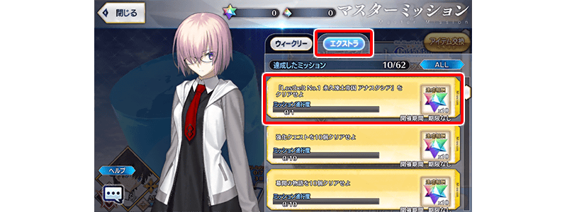
◆追加額外任務◆
| 任務名稱 | 任務達成報酬 | |
|---|---|---|
| 通過『Lostbelt No.1 永久凍土帝國 安娜塔西亞』 |

|
聖晶石 10個 |
| 通過『Lostbelt No.2 無間冰焰世紀 諸神黃昏』 |
|
聖晶石 10個 |
| 通過『Lostbelt No.3 人智統合真國 SIN』 |
|
聖晶石 10個 |
在御主任務(額外任務)，追加可靠「主線記錄的自由關卡」通過次數達成的新任務。
通過現在實裝的主線記錄自由關卡182個其中180個的話，可得到最多180個(聖晶石召喚最大66次份)的聖晶石！
※就算已經通過主線記錄自由關卡的玩家，也能同様領取通過報酬。 ※(聖晶石召喚最大66次份)限在同一個聖晶石召喚進行的情況
◆翻新實施時間◆
2019年8月4日(日) 18:00～
◆通過報酬的領取方式◆
在御主任務畫面顯示「額外(エクストラ)」項目內，會顯示有關通過自由關卡的任務，請點擊已通過的任務來領取達成報酬。

◆追加額外任務◆
| 任務名稱 | 任務達成報酬 | |
|---|---|---|
| 通過10個主線記錄的自由關卡 |
|
聖晶石 10個 |
| 通過20個主線記錄的自由關卡 |
|
聖晶石 10個 |
| 通過30個主線記錄的自由關卡 |
|
聖晶石 10個 |
| 通過40個主線記錄的自由關卡 |
|
聖晶石 10個 |
| 通過50個主線記錄的自由關卡 |
|
聖晶石 10個 |
| 通過60個主線記錄的自由關卡 |
|
聖晶石 10個 |
| 通過70個主線記錄的自由關卡 |
|
聖晶石 10個 |
| 通過80個主線記錄的自由關卡 |
|
聖晶石 10個 |
| 通過90個主線記錄的自由關卡 |
|
聖晶石 10個 |
| 通過100個主線記錄的自由關卡 |
|
聖晶石 10個 |
| 通過110個主線記錄的自由關卡 |
|
聖晶石 10個 |
| 通過120個主線記錄的自由關卡 |
|
聖晶石 10個 |
| 通過130個主線記錄的自由關卡 |
|
聖晶石 10個 |
| 通過140個主線記錄的自由關卡 |
|
聖晶石 10個 |
| 通過150個主線記錄的自由關卡 |
|
聖晶石 10個 |
| 通過160個主線記錄的自由關卡 |
|
聖晶石 10個 |
| 通過170個主線記錄的自由關卡 |
|
聖晶石 10個 |
| 通過180個主線記錄的自由關卡 |
|
聖晶石 10個 |
所有自由關卡初次通過前的AP消耗量以期間限定變成1/4！
藉此機會以通過尚未攻略的自由關卡為目標吧！
※初次通過是指初次通過報酬入手的時間點前。 ※請注意強化關卡及幕間物語、曜日關卡為對象外。 ※就算在戰鬥中撤退的情況，AP的消耗仍是1/4。
◆舉辦期間◆
2019年8月4日(日) 18:00～8月14日(三) 11:59
在迦勒底之門內每天輪流出現的關卡以期間限定所有的每日關卡AP消耗量變成1/2！
◆舉辦期間◆
2019年8月4日(日) 18:00～8月14日(三) 11:59
◆對象關卡◆
【4周年記念】蒐集種火<槍･殺篇>初級、中級、上級、超級
【4周年記念】蒐集種火<劍･騎篇>初級、中級、上級、超級
【4周年記念】蒐集種火<弓･術篇>初級、中級、上級、超級
【4周年記念】蒐集種火<隨機篇>初級、中級、上級、超級
【4周年記念】弓之修練場 初級、中級、上級、超級
【4周年記念】槍之修練場 初級、中級、上級、超級
【4周年記念】狂之修練場 初級、中級、上級、超級
【4周年記念】騎之修練場 初級、中級、上級、超級
【4周年記念】術之修練場 初級、中級、上級、超級
【4周年記念】殺之修練場 初級、中級、上級、超級
【4周年記念】劍之修練場 初級、中級、上級、超級
打開寶物庫之門 初級、中級、上級、超級
※每日關卡的詳細如下。
【打開寶物庫之門、蒐集種火 關卡的難易度等】
| 難易度 | 推薦Lv | 消耗AP | 初次通過報酬 | |
|---|---|---|---|---|
| 初級 | 5 | 10→5 | |
魔力稜鏡 1個 |
| 中級 | 10 | 20→10 | |
魔力稜鏡 2個 |
| 上級 | 25 | 30→15 | |
魔力稜鏡 3個 |
| 超級 | 40 | 40→20 | |
魔力稜鏡 4個 |
【修練場 關卡的難易度等】
| 難易度 | 推薦Lv | 消耗AP | 初次通過報酬 | |
|---|---|---|---|---|
| 初級 | 10 | 10→5 | |
魔力稜鏡 1個 |
| 中級 | 25 | 20→10 | |
魔力稜鏡 2個 |
| 上級 | 40 | 30→15 | |
魔力稜鏡 3個 |
| 超級 | 60 | 40→20 | |
魔力稜鏡 4個 |
※關卡通過報酬的魔力稜鏡只限初次通過時才可獲得。 ※關卡通過報酬的魔力稜鏡只有「打開寶物庫之門」是每日重置。
以期間限定開放全種類在迦勒底之門內每天輪流出現的關卡「蒐集種火」與「修練場」。
◆舉辦期間◆
2019年8月4日(日) 18:00～8月14日(三) 11:59
◆對象關卡◆
・蒐集種火
【4周年記念】蒐集種火<槍･殺篇>初級、中級、上級、超級
【4周年記念】蒐集種火<劍･騎篇>初級、中級、上級、超級
【4周年記念】蒐集種火<弓･術篇>初級、中級、上級、超級
【4周年記念】蒐集種火<隨機篇>初級、中級、上級、超級
・修練場
【4周年記念】弓之修練場 初級、中級、上級、超級
【4周年記念】槍之修練場 初級、中級、上級、超級
【4周年記念】狂之修練場 初級、中級、上級、超級
【4周年記念】騎之修練場 初級、中級、上級、超級
【4周年記念】術之修練場 初級、中級、上級、超級
【4周年記念】殺之修練場 初級、中級、上級、超級
【4周年記念】劍之修練場 初級、中級、上級、超級
※關卡通過報酬的魔力稜鏡只限初次通過時才可獲。 ※請注意由於以期間限定出現的「蒐集種火」及「修練場」與平常每天輪流出現的「蒐集種火」及「修練場」關卡不同，不會繼承「關卡情報」。 ※舉辦期間中，不會重置關卡通過報酬。
【每日關卡一覧】
| 星期 | 關卡名 | 做為戰利品可獲得的 主要道具 |
攻略推薦 職階 |
|---|---|---|---|
| 一 | 打開寶物庫之門 AP1/2
|
QP |  |
| 【4周年記念】弓之修練場 AP1/2
|
Archer的靈基再臨用道具、Archer的技能強化素材道具 |  |
|
| 【4周年記念】蒐集種火 <槍・殺篇> AP1/2
|
Lancer、Assassin、Berserker的經驗值卡 |   |
|
| 二 | 打開寶物庫之門 AP1/2
|
QP | |
| 【4周年記念】槍之修練場 AP1/2
|
Lancer的靈基再臨用道具、Lancer的技能強化素材道具 | |
|
| 【4周年記念】蒐集種火 <劍・騎篇> AP1/2
|
Saber、Rider、Berserker的經驗值卡 |  |
|
| 三 | 打開寶物庫之門 AP1/2
|
QP | |
| 【4周年記念】狂之修練場 AP1/2
|
Berserker的靈基再臨用道具、Berserker的技能強化素材道具 | ALL | |
| 【4周年記念】蒐集種火 <弓・術篇> AP1/2
|
Archer、Caster、Berserker的經驗值卡 | |
|
| 四 | 打開寶物庫之門 AP1/2
|
QP | |
| 【4周年記念】騎之修練場 AP1/2
|
Rider的靈基再臨用道具、Rider的技能強化素材道具 | ||
| 【4周年記念】蒐集種火 <槍・殺篇> AP1/2
|
Lancer、Assassin、Berserker的經驗值卡 | |
|
| 五 | 打開寶物庫之門 AP1/2
|
QP | |
| 【4周年記念】術之修練場 AP1/2
|
Caster的靈基再臨用道具、Caster的技能強化素材道具 | |
|
| 【4周年記念】蒐集種火 <劍・騎篇> AP1/2
|
Saber、Rider、Berserker的經驗值卡 | |
|
| 六 | 打開寶物庫之門 AP1/2
|
QP | |
| 【4周年記念】殺之修練場 AP1/2
|
Assassin的靈基再臨用道具、Assassin的技能強化素材道具 | |
|
| 【4周年記念】蒐集種火 <弓・術篇> AP1/2
|
Archer、Caster、Berserker的經驗值卡 | |
|
| 日 | 打開寶物庫之門 AP1/2
|
QP | |
| 【4周年記念】劍之修練場 AP1/2
|
Saber的靈基再臨用道具、Saber的技能強化素材道具 | |
|
| 【4周年記念】蒐集種火 <隨機篇> AP1/2
|
Saber、Archer、Lancer、Rider、Caster、Assassin、Berserker的經驗值卡(隨機) | - |
※Berserker在所有曜日關卡皆為有效職階。
包含每日關卡的自由關卡為對象，追加在同個關卡挑戰好幾次時的便利新功能「關卡連續出撃」！
在挑戰已通過的關卡時，顯示戰鬥結算畫面後(進行好友申請情況之後)，不會有移動至管理室(ターミナル)和區域地圖的間隔，可連續出撃同個關卡。
選擇「連續出撃」的話，會移動到支援選擇畫面，選擇支援的話就會與前一次同様的隊伍編成開始戰鬥。想變更隊伍編成，跟以往一樣先返回到管理室(ターミナル)和區域地圖等後再次選擇關卡，就可選擇不同的隊伍編成。
◆追加時間◆
2019年8月4日(日) 18:00～
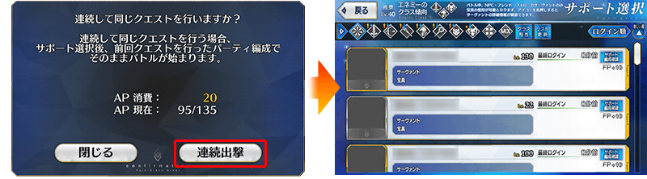
※想要使用「關卡連續出撃」功能的話，在關卡看板必須要有「CLEAR」的文字顯示。 ※一部份的自由關卡為「關卡連續出撃」功能的對象外。
下述的期間中，在進行從者及概念禮裝的強化時，大成功(經驗值2倍加成)・極大成功(經驗值3倍加成)發生機率以期間限定變成3倍！
務必藉此機會強化中意的從者和概念禮裝吧！
◆舉辦期間◆
2019年8月4日(日) 18:00～8月14日(三) 11:59
向所有的御主對象，以追加擴張「從者的持有欄位」與「概念禮裝的持有欄位」50欄位。
目前為止的450欄位擴張至持有欄位500欄位。
另外，在達文西工房內的「從者保管欄位增加」「概念禮裝保管欄位增加」，可消耗魔力稜鏡追加的保管欄位上限數再追加20次份(合計100欄位)。
◆翻新實施時間◆
2019年8月4日(日) 18:00～
【持有欄位的擴張數】
| 對象持有欄位 | 擴張數 |
|---|---|
| 從者持有欄位 | 450→500(50欄位追加) |
| 概念禮裝持有欄位 | 450→500(50欄位追加) |
【保管欄位的擴張數】
| 對象保管欄位 | 剩餘次數 | 最大擴張時 |
|---|---|---|
| 從者保管欄位增加 | 80→100(20次份追加) | 500→600(100欄位追加) |
| 概念禮裝保管欄位增加 | 80→100(20次份追加) | 500→600(100欄位追加) |
※請注意從者保管欄位的擴張及概念禮裝保管欄位的擴張，1次的擴張需要魔力稜鏡50個。
舉辦強化從者的能力的特別關卡「從者強化關卡」第11彈！
本次為了記念4周年，共計14位的從者對象！
詳情請在此處的公告確認。
◆追加時間◆
2019年8月4日(日) 18:00～
強化從者指令卡的新系統「指令卡強化」登場！
個別強化從者各自持有的5張指令卡，可讓「攻擊力」提高！
「指令卡強化」必要的指令卡強化素材「獸之足跡」可做為恆常連續登入獎勵的報酬入手外，也能靠2019年8月4日(日) 18:00～8月14日(三) 11:59舉辦的「指令卡強化」釋出記念關卡入手。
◆追加時間◆
2019年8月4日(日) 18:00～
有關「指令卡強化」的操作在主選單的「強化」＞「指令卡強化」進行。
「指令卡強化」進行時的順序如下。
1.選擇從者
2.選擇想強化指令卡
3.使用QP與指令卡強化素材道具，執行指令卡強化
另外，強化內容是所有同從者共有。持有多個同從者的情況，也會反映強化內容到強化對象之外的所有同從者。
※關於透過「指令卡強化」，1張指令卡最多能強化到500。 ※期間限定加入從者的指令卡無法強化。 ※請注意強化過1次的指令卡無法回到原來的情況。
◆新系統「指令卡強化」實裝後的恆常連續登入獎勵◆
| 連續登入 天數 |
贈送內容 | |||||
|---|---|---|---|---|---|---|
| 第1天 | 素材交換券 1張 |
|
友情點數 2,000pt | |||
| 第2天 | 素材交換券 1張 |
|
聖晶石 1個 | |||
| 第3天 | 素材交換券 1張 |
|
睿智的猛火ALL★4(SR) 1張 | |||
| 第4天 | 素材交換券 1張 |
|
聖晶石 1個 | |||
| 第5天 | 素材交換券 1張 |
|
睿智的猛火ALL★4(SR) 2張 | |||
| 第6天 | 素材交換券 1張 |
|
聖晶石 2個 | |||
| 第7天 | 素材交換券 1張 |
|
呼符 1張 | 獸之足跡 1個 | ||
※恆常連續登入獎勵自8/5(一) 3:00翻新成上述內容。
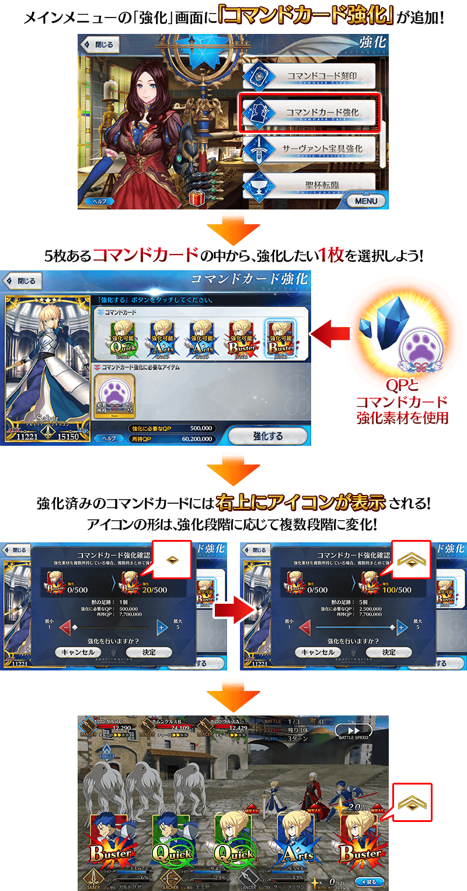
通過下述的期間中在迦勒底之門出現的「指令卡強化」釋出記念關卡，得到指令卡強化素材「獸之足跡」吧！
※請注意「指令卡強化」釋出記念關卡沒有文字冒險部份。
◆舉辦期間◆
2019年8月4日(日) 18:00～8月14日(三) 11:59
◆關卡開放條件◆
滿足以下條件的御主才能參加
・通過「特異點F 炎上汙染都市 冬木」
◆通過報酬◆
指令卡強化素材「獸之足跡」 1個
翻新聖晶石召喚，需要聖晶石數相同，10次召喚增量成11次召喚！
透過1次召喚的獎勵，各聖晶石召喚個別計算。
例如，在期間限定聖晶石召喚計算1次的情況，就算在故事召喚進行1次召喚，期間限定聖晶石召喚的計算仍是1。
同様地，就算在Pick Up召喚1進行9次1次召喚的情況，Pick Up召喚2的計算仍是1。
另外，無法橫跨期間限定聖晶石召喚保留計算。中途進行1次召喚完期間限定聖晶石召喚就結束，切換到新的期間限定聖晶石召喚時，計算從1重置。
另外自本次的翻新實施後，★5(SSR)從者單獨Pick Up時的抽出機率調整為比以往來得高。
◆翻新實施時間◆
2019年8月4日(日) 18:00～

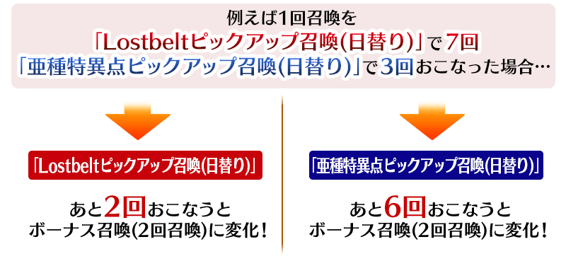
※中途進行1次召喚完期間限定聖晶石召喚就結束，切換到新的期間限定聖晶石召喚時，計算從1重置。 ※所有靠有償聖晶石、無償聖晶石、呼符進行1次召喚情況同樣都計算召喚次數，在第10次進行獎勵的2次召喚。 ※獎勵計算是各聖晶石召喚保存，不會與其他聖晶石召喚共有計算。 ※請注意在本修改前進行的1次召喚不包含在計算內。 ※在友情點數召喚沒有獎勵召喚，與以往一樣是1次召喚或10次召喚。

舉辦★5(SSR)從者之中對象「只限期間限定從者」，確定1位★5(SSR)從者的「FGO Fes. 2019 ～4th Anniversary～ 福袋召喚」！
這次是用有償聖晶石15個進行比以往的福袋召喚多1次份的「11次召喚」！
詳情請自上述橫幅確認。

翻新「★4(SR)美狄亞〔Lily〕」「★3(R)呂布奉先」的戰鬥動作及寶具演出！
在「Fate/Grand Order」在官方網站內的公告中，以影片公開寶具演出，敬請確認。
◆翻新實施時間◆
2019年8月4日(日) 18:00～
【美狄亞〔Lily〕】
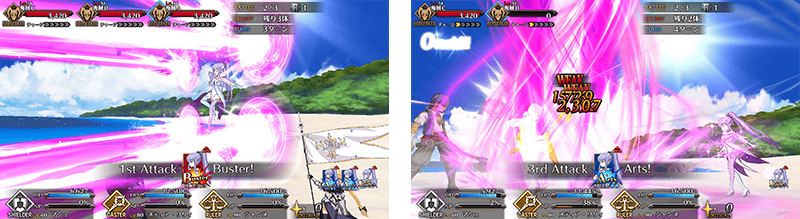
【呂布奉先】
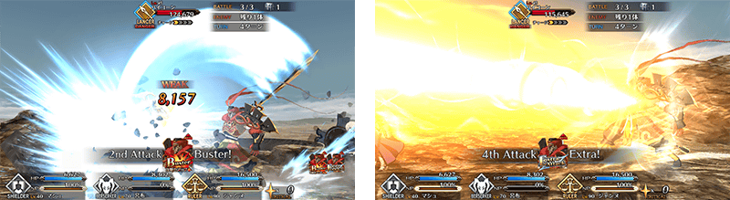
在友情點數召喚新追加4位★2(UC)從者、3位★1(C)從者。
關於做為新登場的7位從者詳情，請在此處的公告確認。
◆追加時間◆
2019年8月4日(日) 18:00～
| 職階 | 稀有度 | 從者名 |
|---|---|---|
| Saber | ★ | 伊阿宋 |
| Archer | ★★ | 帕里斯 |
| Lancer | ★★ | 加雷斯 |
| Rider | ★ | 巴沙洛繆・羅伯茨 |
| Caster | ★★ | 陳宮 |
| Assassin | ★ | 夏綠蒂・科黛 |
| Berserker | ★★ | 莎樂美 |
向所有的御主對象，實裝將1位從者進行無論從哪個再臨階段一口氣到最終再臨的「特別再臨」功能。
「特別再臨」可不消耗靈基再臨所需道具和QP，將喜好的從者靈基再臨到最終再臨。另外進行「特別再臨」的從者，會提升到在最終再臨的靈基再臨所需的等級。
「特別再臨」可自「MENU」＞「強化」的「特別再臨(從者進化)」進行。
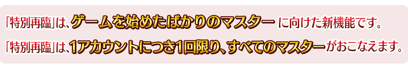
◆追加時間◆
2019年8月4日(日) 18:00～
※新開始遊戲御主的使用期限是從通過「特異點F 炎上汙染都市 冬木 第3節 進行度1」後的90天內。 ※在本功能實裝已經遊玩御主的使用期限在2019年11月2日(六) 17:59失效。 ※進行「特別再臨」或未使用就超過期限的話，「特別再臨」鍵會自「強化」畫面一覧消失。
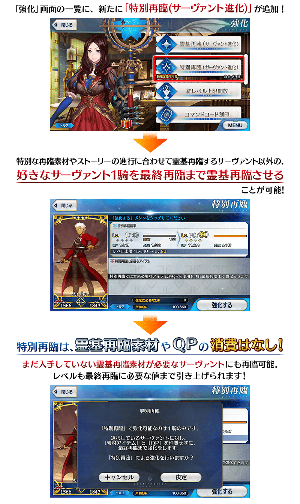
◆有關「特別再臨」的注意◆
※「特別再臨」的進行，1個帳號只限1次。
※就算在本功能實裝前已經遊玩的御主，也能使用「特別再臨」。
※關於配合故事進行而靈基再臨從者、期間限定加入從者、需要専用靈基再臨素材的從者無法進行「特別再臨」。
※請注意途中就算對尚未完成靈基再臨的從者進行「特別再臨」情況，也不會返還在那之前使用的靈基再臨素材及QP。
為了記念4周年，舉辦收集殘留特異點F及從亞種特異點Ⅰ到亞種特異點Ⅳ、從第2部 第1章到第2部 第4章印象的戰鬥「4周年記念回憶關卡」！
通過在迦勒底之門內出現「回憶關卡」的話，可入手期間限定概念禮裝「英靈祭裝」！
◆回憶關卡舉辦期間◆
2019年8月3日(六) 8:00～8月14日(三) 11:59
◆期間限定概念禮裝「英靈祭裝」交換期間◆
2019年8月3日(六) 8:00～8月21日(三) 11:59
期間限定概念禮裝「英靈祭裝」的所有插圖都是新繪製！
使用通過「回憶關卡」後入手的「FGO Fes. 2019 英靈祭裝券」，可從全39張之中選擇最多2張喜愛的入手。
「回憶關卡」就算通過後也不會消失，能無數次挑戰，可以變更從者和概念禮裝的組合後再次挑戰。
◆「FGO Fes. 2019 英靈祭裝券」交換對象◆
做為交換對象「英靈祭裝」全39張開放條件的詳情請在此處的公告確認。
※關卡通過報酬、戰利品、御主EXP、魔術禮裝EXP、絆點數只可在初次通過時獲得。 ※「FGO Fes. 2019 英靈祭裝券」可藉由點擊管理室(ターミナル)畫面右上的「活動報酬」鍵或在達文西工房內的「活動道具交換」點擊活動看板，交換活動道具。 ※透過通過「回憶關卡」入手的「FGO Fes. 2019 英靈祭裝券」最多2張。 ※請注意做為交換對象的期間限定概念禮裝「英靈祭裝」種類會透過主線關卡通過狀況有所變化。
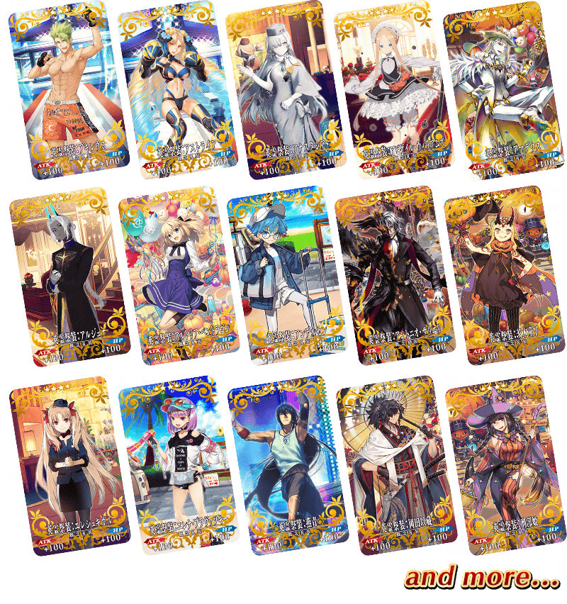

【8月3日(六) 8:00更新】
連續2天2019年8月3日(六)・4日(日)在幕張Messe 國際展示場舉辦的「Fate/Grand Order Fes. 2019 ～迦勒底樂園～」。
在那會場進行的最大傷害試行的活動，將做為遊戲內的關卡2天內間以限定配信！
並且，在活動會場無論哪個到場的御主，在會場內撃破17名以上的話贈送所有玩家聖晶石30個！
※做為「niconico生放送特別節目連動宣傳活動報酬」一部份的「戰鬥競技場挑戰達成報酬」，在初次登入時贈送。(8/4 17:00追記)
4周年記念最多敵人撃破數試行關卡是競爭「以規定回合數擊倒幾位敵人」的特殊關卡。
通過後也不會消失，可以變更從者和概念禮裝的組合後無數次挑戰。
還有，最大敵人撃破數試行關卡只限自己的持有從者編成隊伍(無法使用支援的從者)
靠培育的自豪者挑戰，挑戰自己最高記錄吧！
※2種最多敵人撃破數試行關卡會在迦勒底之門內配信。 ※敵人撃破數各關卡分別統計，會做為最高的「最多撃破記錄」記錄。 ※請注意在4周年記念最多敵人撃破數試行關卡沒有關卡通過報酬等。 ※只限初次通過時可獲得戰利品、御主EXP、魔術禮裝EXP、絆點數。 ※本試行關卡中無法使用接關。 ※透過敗北及撤退結束戰鬥的情況，無法保存記錄。
◆舉辦期間◆
關卡1:2019年8月3日(六) 8:00～22:59
關卡2:2019年8月4日(日) 8:00～22:59
◆活動參加條件◆
滿足以下條件的御主才能參加
・通過「特異點F 炎上汙染都市 冬木」
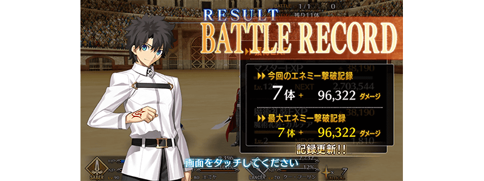
以期間限定在達文西工房的「魔力稜鏡交換」追加下述的概念禮裝及道具。
◆魔力稜鏡交換＆期間限定概念禮裝◆

|
★★★★★SSR |
◆概念禮裝交換期間◆
2019年8月4日(日) 18:00～10月31日(四) 22:59
| 追加道具 | 能交換次數 | 1次交換所需 魔力稜鏡數 |
|---|---|---|
| 【期間限定】 名探偵フォウムズ |
5次 | 1000個 |
※8月5日(一) 17:00錯字修正
◆道具交換期間◆
2019年8月4日(日) 18:00～8月14日(三) 11:59
| 追加道具 | 能交換 次數 |
1次交換所需 魔力稜鏡數 |
|
|---|---|---|---|
 |
【期間限定】 Quick紋章開啟器 |
3次 | 50個 |
 |
【期間限定】 Arts紋章開啟器 |
3次 | 50個 |
 |
【期間限定】 Buster紋章開啟器 |
3次 | 50個 |
 |
【期間限定】 紋章移除器 |
3次 | 100個 |
|
【期間限定】 呼符 |
10次 | 10個 |
|
【期間限定】 睿智的猛火ALL★4(SR)10張組 |
10次 | 20個 |
|
【期間限定】 英靈結晶・星之芙芙ALL★3(HP) |
30次 | 5個 |
|
【期間限定】 英靈結晶・太陽之芙芙ALL★3(ATK) |
30次 | 5個 |
以期間限定在達文西工房的「稀有稜鏡交換」追加下述的道具。
◆道具交換期間◆
2019年8月4日(日) 18:00～8月14日(三) 11:59
| 追加道具 | 能交換 次數 |
1次交換所需 稀有稜鏡數 |
|
|---|---|---|---|
 |
【期間限定】 迦勒底的夢火 |
1次 | 3個 |
|
【期間限定】 紋章移除器 |
3次 | 1個 |
 |
【期間限定】 傳承結晶 |
1次 | 5個 |
|
【期間限定】 英靈結晶・流星之芙芙ALL★4(HP) |
1次 | 3個 |
|
【期間限定】 英靈結晶・日輪之芙芙ALL★4(ATK) |
1次 | 3個 |
|
【期間限定】 友情點數 20,000pt |
5次 | 1個 |
贈送在2019年8月4日(日) 放送「Fate/Grand Order 迦勒底放送局 4周年SP」進行的特別節目連動宣傳活動報酬！
◆領取期間◆ ◆贈送內容◆ ◆領取條件◆
※期間內未登入的話無法領取。
※禮物只能領取1次。
2019年8月5日(一) 3:00～8月12日(一) 2:59
上述期間中，在初次登入「Fate/Grand Order」時間點，贈予至禮物箱
聖晶石 90個
(7萬RT達成報酬60個＋戰鬥競技場挑戰達成報酬30個)
在2019年8月5日(一) 2:59前通過「特異點F 炎上汙染都市 冬木」的御主對象
在迦勒底之門內能觀賞TV動畫「Fate/Grand Order -絕對魔獸戰線巴比倫尼亞-」Episode0的特別關卡以期間限定登場！
在遊戲內搶先一步享受動畫的世界！
※資料下載所需總容量約262MB，請確保使用的裝置有足夠的空間。 ※請注意本影片觀賞也不會登錄到圖鑑(マテリアル)。 ※使用行動網路的情況，請注意通訊限制等。
※本關卡會有根據使用裝置的音量設定讓一部份演出以大音量播放的情況。請事先確認使用裝置的音量，享受活動。
◆關卡配信期間◆
2019年8月4日(日) 18:00～8月11日(日) 11:59
◆參加條件◆
所有的御主對象
※新御主玩家必須推進至通過「特異點F 炎上汙染都市 冬木 第3節 進行度1」。
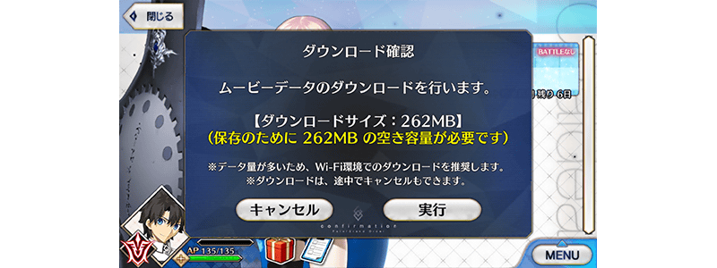
動畫製作：CloverWorks
其他還有，期間限定「FGO Fes. 2019 ～4th Anniversary～ Lostbelt＆亞種特異點Pick Up召喚(每日交替)」同時舉辦！
關於詳情，請自下述橫幅確認。
■「FGO Fes. 2019 ～4th Anniversary～ Lostbelt＆亞種特異點Pick Up召喚(每日交替)」詳細情報